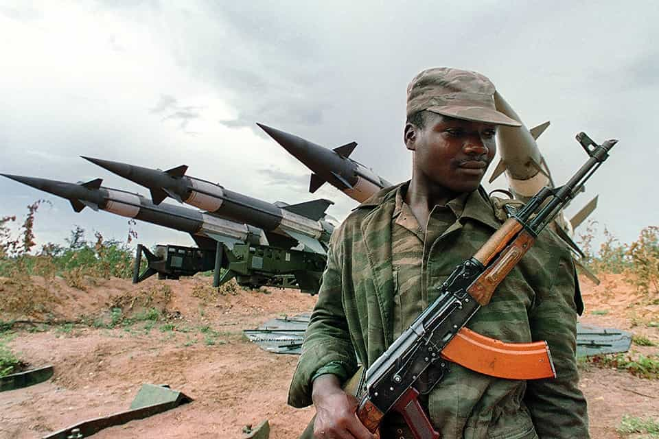
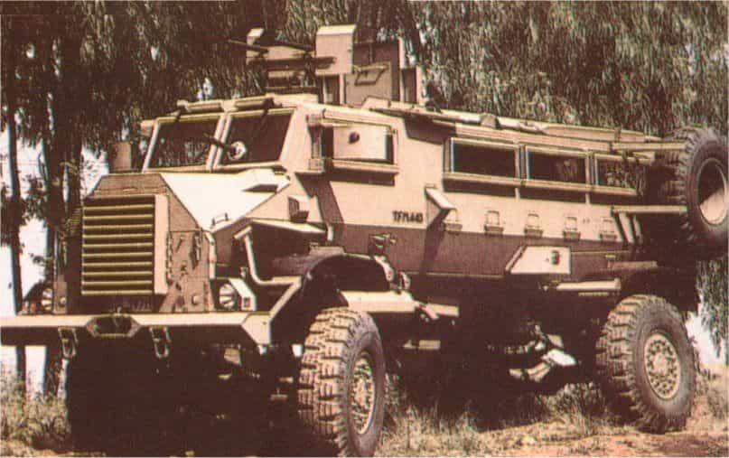

Kiron is a somber European man who devotes most of his time to making money, reading, working out and plotting revenge against the people who turned the world upside down.


When the bloody tide of communism started rolling across the Black Continent in the 1960’s, the Western world preferred to sit and watch, or even assist it. The astute few, however, quickly realized that this seemingly chaotic surge had a clear purpose: to drive the white man out of Africa and make it a foothold of third world hordes. And even though the white man was greatly outnumbered, with hands tied by political treachery and cowardice, there still were plenty who stood and fought in an epic struggle that continues to this day.

After major colonial powers’ withdrew from Africa, the only white players left were Portugal, Rhodesia and South Africa. Made complacent by years of peace and comfort, Portuguese colonial administration could do little to stop Angola and Mozambique from rapidly corkscrewing into oblivion; toppling of Salazar’s regime in Portugal by communists simply delivered the coup de grace. Mozambique became a typical African dictatorship, while Angola was split between three armed groups: MPLA, UNITA and FNLA.
South Africa, realizing it was next on the menu, started supporting UNITA and especially FNLA against MPLA, which was heavily backed by USSR and especially Cuba. Unfortunately, MPLA still managed to assume power in Angola, and it was not long before it found a new target: South West Africa, a mineral-rich protectorate of South Africa.
The South West African People’s Organisation (SWAPO), initially the runt of the Afro-Marxist litter that survived on meager handouts from the Eastern Bloc and treasonous Western governments, started gradually gaining power. In 1972, political opossums in the UN granted it recognition and in 1976, MPLA allowed SWAPO to use its bases in southern Angola as staging grounds for incursions into South West Africa.
Modus operandi of SWAPO wasn’t any different from other black-and-red terrorist groups of their time: infiltrate a remote farming area across the border, murder any whites encountered, torch a farm or two and run back. Arn Durand’s autobiography sums them up perfectly:
Fill your head with Marxist communist ideologies. Pick up an RPG-7, an AK-47 and some landmines and hand grenades, put on a Cuban or Chinese camouflage uniform and march across the border of another country. Shoot and kill the locals who don’t support your ideas. Abduct the schoolchildren at gunpoint, march them to your training bases to indoctrinate them and fill their heads with your bullshit to force them to do what you are doing. You’re looking for shit and you’re bound to get your head blown off and those crap ideas spilt out all over the fine white sand.
– “Zulu Zulu Golf”, 2011
Ovamboland, the northernmost part of South West Africa, rapidly became a battlefield, with its native Ovambo tribe splitting into anti- and pro-SWAPO factions – the former determined to maintain the comfortable status quo under an administration loyal to South Africa, the latter intending to help drive the whites out of “Namibia” and seize power over it.
South Africa reacted quickly, dispatching its army to guard the Angolan-SWA border. But SADF, despite being very adept at conventional warfare, lacked the flexibility needed to intercept SWAPO raiding parties, not to mention that at the time it was not allowed to cross the Angolan border. Invading guerrillas could only be tackled by something much swifter and far less hierarchical than the army – something that South Africa did not have.
Securing the full length of the Angolan-SWA border required tens of thousands of troops.
The solution came in 1978, with arrival of Johannes “Sterk Hans” Dreyer, a South African Police brigadier, in the area of operations. Having served in Rhodesia in the period when SAP assisted it with counter-insurgency efforts, he knew how the country’s most fearsome military unit, the Selous Scouts, operated. While recognizing the usefulness of local population for intelligence gathering, he dismissed the Scouts’ infiltration tactics as unsuitable for the flat, nearly featureless landscape of Ovamboland.
Instead, he opted for a highly mobile hunter-killer unit that would track and pursue guerrillas across immense distances. Operating on a shoestring budget, Dreyer managed to recruit 60 Ovambos and 6 white police officers to man two pickups and two cars, arming them with trophy weapons. His detractors were in stitches over this ragtag outfit, but quickly went silent when in 1979, after seven days of pursuit, it intercepted a terrorist warband, killing two. This was soon followed by another long chase and more dead terrorists; in less than a year, Dreyer’s men were killing 50 to 80 SWAPO per month.
Johannes Dreyer, founder and father figure of Koevoet
But the unit’s official recognition was still far away; until then, “Ops K” sustained itself in any way it could, including by stealing supplies and equipment from military bases. Moreover, the unit’s classified status meant that all their kills were credited to the army; these two circumstances paved the way to mutual resentment that sometimes bordered on open hostility. Three years later, Dreyer went to the higher-ups with statistics. Despite the massive military presence at the Angolan border, Ops K had more enemy contacts and kills than all of the deployed units combined. Backed into a corner by undeniable facts, the MoD finally started coughing up money.
The first sign of the government’s goodwill was a batch of Hippo APCs, intended to counter SWAPO’s copious use of landmines. Dreyer’s men showed their gratitude in a very unorthodox way – by using arc welders and angle grinders to make Hippos open-topped, add gunports, and install weapon mounts that could accommodate even 20mm cannons. Engineers back in SA were horrified, but later ended up incorporating the modifications into new MRAP vehicles: the Army got the Buffel, while Koevoet, as Ops K came to be known, got the Casspir.

This machine pretty much defined the unit’s tactics. Koevoet was split into battlegroups, each comprised of approximately 40 Ovambos, 4 whites, 4 Casspirs bristling with weapons and a Blesbok supply vehicle. The groups patrolled the bush in week-long shifts, visiting villages and inquiring about SWAPO sightings. The moment spoor was picked up, the hunt was on: Ovambos would run in front, pointing out the spoor with long sticks, with Casspirs following closely behind, gunners on top watching for ambushes.
When the enemy was close but not yet visible, a Casspir or two would often leap-frog ahead of the main group in order to prevent them from scattering or cut off a possible escape route. The moment a contact was made, trackers would hit the ground while Casspirs rushed in, encircling the enemy in a hail of gunfire and bursts of white phosphorus grenades. In case of casualties or overwhelming enemy presence, helicopters would be scrambled from a nearby airfield, providing additional firepower and vision; Koevoet’s relationship with the Air Force was far more amiable than with the Army.
Even by African standards, Koevoet was an anomaly. If carrying out military operations as a desegregated police unit in an apartheid state was not enough, the unorthodox tactic they employed put them at extreme risk. Casspirs, while bullet- and mine-proof, offered no protection from RPGs, and their open-topped design made gunners very vulnerable during contacts, while trackers were not protected at all.
Koevoet frequently disregarded the army’s combat zone designations, which resulted in several friendly fire incidents. Another distinguishing feature was the bounty system – the unit was compensated for every killed and captured terrorist, as well as their weapons and equipment, leading to cutthroat competition between battlegroups.
Koevoet also engaged in an improvised hearts-and-minds campaign by treating local natives with great cordiality and protecting them from SWAPO raids; this sharply contrasted with their habit of decorating bumpers and wheels of their Casspirs with corpses as a warning to SWAPO sympathizers. Some Koevoet trackers were ex-SWAPO themselves: similarly to the Selous Scouts, particularly skilled captives were offered to join the battlegroups, while others were gainfully employed as farm workers and cooks. Most of the fighting, however, was still done by whites, as many Ovambos refused to or were simply afraid to participate in contacts.
Resourcefulness and sheer brutality of the new unit paid off: despite constant attempts by SWAPO to terrorize South West Africa’s population, very few succeeded and none were left unavenged. The full list of Koevoet operations is far too long to provide here (especially considering that most started as routine patrols), but it is crowned by their defense of Tsumeb, when over 150 SWAPO on their way to a small mining town were intercepted, dispersed and annihilated by several battlegroups before the Army even started to react. The few captives later confessed to being ordered to burn Tsumeb to the ground.
In its prime, SWAPO was a force to be reckoned with. Armed by Soviets, trained by Cubans and brainwashed into extreme bloodthirst, they were a formidable foe even for SADF, one of the most capable armies in the world. And yet, Koevoet did not even bother with posting sentries during their overnight camps in the bush – their reputation did the job just as well.
For SWAPO, the South African Army represented pure evil, but it was a familiar, comprehensible evil. However, hearing the unmistakable roar of a Casspir’s engine and catching a glimpse of a Koevoet constable’s olive uniform was often all it took for a trained guerrilla to panic and flee. Not even 32 Battalion instilled such dread – the idea of an enemy that chases you until you drop dead was far more terrifying than any ambush, and mercy was not guaranteed even in case of surrender.
After South Africa told the UN to scram and allowed its troops to cross into Angola, syringes with benzedrine became standard issue for terrorists, whose survival now hinged on beating Koevoet to their bases deep within Angola rather than just the border. Few ever succeeded – Ovambos’ tracking skills, which they learned from early childhood as herdboys, bordered on supernatural, and Casspirs were never far behind.
The facts speak for themselves: 11 years, 1615 contacts with the enemy, 3681 terrorists killed and captured, 153 constables dead and 949 wounded. That’s a 25:1 kill ratio, compared to the SADF average of 11:1, not to mention that total number of Koevoet staff never exceeded 1000.
Koevoet veterans gather to pay respects to their fallen comrades-in-arms. Pretoria, 2013.
For an outsider, Koevoet were barbarians – grubby, bellicose and completely ruthless. Apartheid South Africa was the favorite boogieman of both communist East and subverted West; once existence of Koevoet was revealed, it also became a target. The very people who bled to ensure that population of South West Africa slept tight at night were described as depraved butchers by politicians and journalists who never stepped foot outside their sterile offices.
Koevoet was disbanded in 1989, its veterans either finding new occupations or becoming scattered across the world as private security contractors. Contemporary governments of Namibia and South Africa prefer to ignore them altogether – given the African tradition of exterminating all opposition, it could be worse.
The outcome of the Border War itself remains unclear: while South Africa failed to retain South West Africa, it bled SWAPO into total impotence, preventing them from establishing yet another bloody dictatorship and forcing them to adhere to more or less democratic means of maintaining power. Modern Namibia owes its peace and stability to Koevoet, SADF and sacrifices they made back in the day, no matter how hard its government tries to deny it.
Read More: An Unsung Hero: The Legend Of Danny Roxo